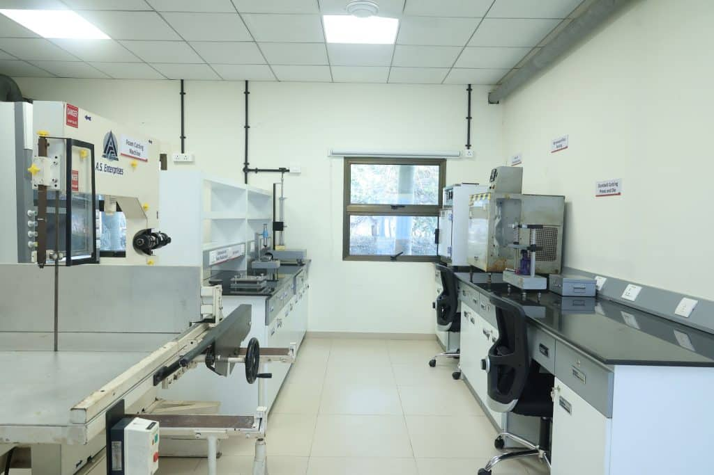
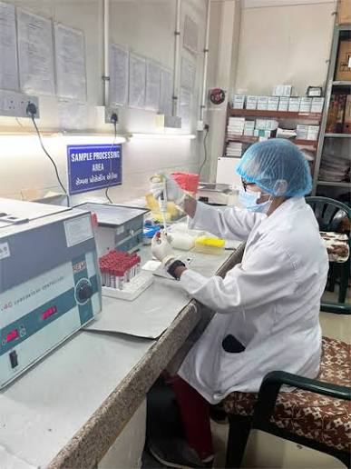
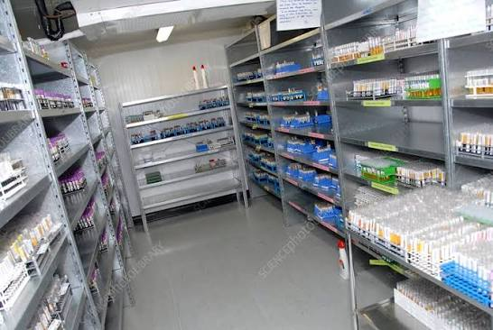
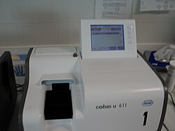
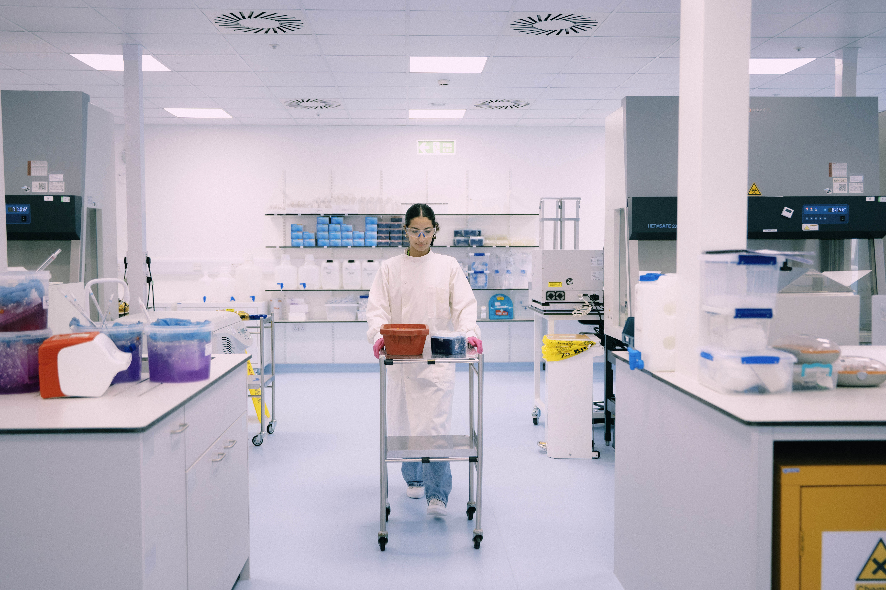

SVU Clinical Diagnostics Lab
Accurate. Reliable. Compassionate Diagnostics.
Accurate. Reliable. Compassionate Diagnostics.

At SVU Clinical Diagnostics Lab, we provide accurate and timely diagnostic testing across blood, urine, thyroid, liver, and kidney profiles. Our state-of-the-art analyzers and experienced technicians ensure reliable results, fast report delivery, and compassionate patient care because your health deserves precision you can trust.
A complete blood count (CBC) test checks the cells in your blood, specifically measuring red blood cells, white blood cells, and platelets to evaluate overall health and detect conditions like anemia, infections, and blood cancers.
The HbA1c test measures your average blood sugar levels over the past 2 to 3 months to diagnose and monitor diabetes. It requires no fasting, and results are categorized as normal (below 5.7%), prediabetes (5.7% to 6.4%), or diabetes (6.5% or higher).
An LFT (Liver Function Test) is a blood test that measures specific enzymes, proteins, and waste products to check how well your liver is working. It helps find liver damage, inflammation, or disease.
Kidney Function Test (KFT) is a group of blood and urine tests used to check how well your kidneys work, focusing on key markers like serum creatinine, blood urea nitrogen (BUN), and eGFR (estimated glomerular filtration rate).
An ECG (electrocardiogram) test is a quick, safe, and painless procedure that records your heart's electrical activity to check for irregular rhythms, heart damage, or chest pain causes.



